AI Academy · Level 2 · Grade 7 · Week 12 · Student lesson
Accuracy as a Fraction
Learn to understand, design, build, test and explain AI systems responsibly.
Project: Transparent Book Recommender
Before you start
AI-1 Week 23: convert fractions to percentages.
Plan time to read, investigate and explain. Keep predictions separate from observations.
Student lesson · 1 of 16
Your mission
Your learning target
I can explain why overall accuracy can hide failure on a less common class.
I can compare a training-majority baseline with class-specific results.
I can calculate an equal-class average and report its limits alongside the confusion matrix.
Remember before reading
Close your notes first. A rough first answer helps us choose the right starting point; it is not a score for your ability.
Without opening the old lesson, explain one key idea from Training and Testing. Give an example and a mistake that the idea helps you avoid.
Without opening the old lesson, explain one key idea from Features and Distractors. Give an example and a mistake that the idea helps you avoid.
Without opening the old lesson, explain one key idea from Debugging Strategies. Give an example and a mistake that the idea helps you avoid.
After trying, check the relevant lesson or ask your teacher. Change the part of your explanation that the evidence shows was wrong.
Week 12: Accuracy as a Fraction
Accuracy is correct predictions divided by all predictions.
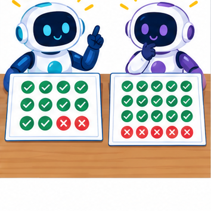
THINKER MISSION
Calculate and compare 7/10 and 18/20 models.
Thinker name and date:
Readiness for the connected explanation
With reference rows and prediction columns ordered clear then blocked, where are false negatives when blocked is positive?
Readiness for Summaries with counts and proportions
If 3 of 12 responses are Yes, what fraction are Yes?
This week’s end goal
By the end, I can compare accuracy with class-specific performance in an imbalanced evaluation.
Student lesson · 2 of 16
Notice the evidence
PICTURE STORY
Notice → Predict → Explain
Begin with visible evidence. Do not explain more than the picture and information support.
MYSTERY
The learners must use accuracy as a fraction to solve a problem. What information do they have? What decision or calculation do they make? What would count as evidence that it worked?
Three observations (what you can point to):
My prediction and the clue supporting it:
A closer explanation
Accuracy counts all correct predictions and divides by all evaluated examples. Each example has equal weight, so a common class contributes more to the score. A high result can hide failure on a rare class. This week keeps the confusion matrix visible and checks both classes separately.
New fictional training data has 16 clear and 4 blocked labels. Its majority baseline predicts clear for every query; choose that rule from training, not evaluation labels. A separate evaluation set also contains 16 clear and 4 blocked cases. A frozen candidate and the baseline are evaluated on the same 20 records.
| Method and reference row | Predicted clear | Predicted blocked |
|---|---|---|
| Baseline reference clear | 16 | 0 |
| Baseline reference blocked | 4 | 0 |
| Candidate reference clear | 12 | 4 |
| Candidate reference blocked | 0 | 4 |
Rows are references and columns are predictions, ordered clear then blocked. Blocked is positive. Both methods get 16/20=80 percent accuracy. The baseline misses all four blocked cases. The candidate finds all four but falsely flags four clear cases. The same score conceals a different tradeoff.
Apply the connected idea: Summaries with counts and proportions
A fictional poll asks whether a short activity was useful. Responses are Yes, No or Unknown. We will report Yes among known responses and also disclose unknown responses. Choosing a denominator changes the question being answered.
Student lesson · 3 of 16
See how it works
VISUAL MECHANISM
Input → Process → Output
Trace the information. At each stage, ask what changed and how you could test it.
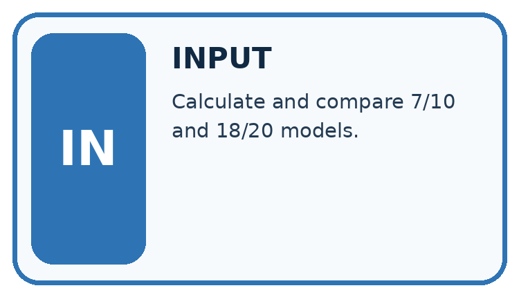
↓
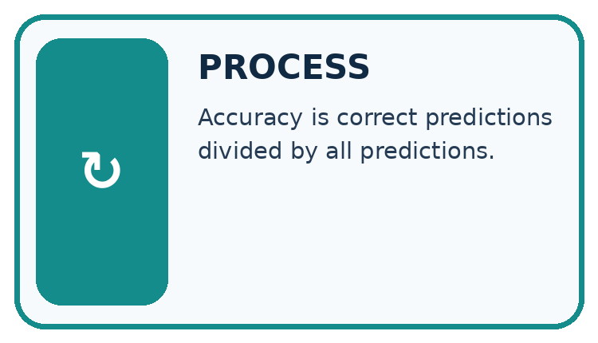
↓
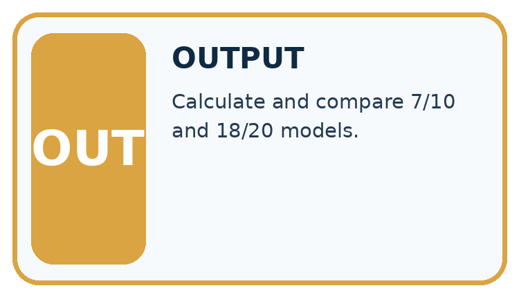
Which stage could fail even when the other two are correct? Explain:
A closer explanation
def scores(counts):
clear_n = sum(counts[0])
blocked_n = sum(counts[1])
if clear_n == 0 or blocked_n == 0:
raise ValueError("Need evaluation examples of both classes")
correct = counts[0][0] + counts[1][1]
accuracy = correct / (clear_n + blocked_n)
clear_fraction = counts[0][0] / clear_n
blocked_fraction = counts[1][1] / blocked_n
balanced = (clear_fraction + blocked_fraction) / 2
return accuracy, balanced
baseline = [[16, 0], [4, 0]]
candidate = [[12, 4], [0, 4]]
for name, counts in [("baseline", baseline), ("candidate", candidate)]:
accuracy, balanced = scores(counts)
print(name, round(100 * accuracy, 1), round(100 * balanced, 1))The output is baseline 80.0 50.0, then candidate 80.0 87.5. In each output line the first percentage is ordinary accuracy and the second is balanced accuracy. For the candidate, the clear-class correct fraction is 12/16=75 percent and the blocked-class fraction is 4/4=100 percent. Their equal average is 87.5 percent.
For the baseline, those fractions are 16/16=100 percent and 0/4=0 percent, averaging 50 percent. The code assumes a two-by-two table of nonnegative integer counts in the stated order. It stops when either reference class is absent. Then report the observed counts and the unavailable class result; do not invent a denominator or silently substitute zero.
Apply the connected idea: Summaries with counts and proportions
responses = ["Yes", "No", "Yes", "Unknown", "Yes"]
yes = 0
known = 0
for response in responses:
if response == "Yes" or response == "No":
known = known + 1
if response == "Yes":
yes = yes + 1
if known > 0:
print(yes / known)
else:
print("No known responses")Follow the evidence
The printed proportion is 0.75, or 75 percent, among four known responses. Yes among all five supplied responses is 0.6, or 60 percent. Both calculations are correct when labelled; they describe different denominators. Unknown must not silently become No.
Name the group behind a percentage
Count the responses before dividing. In the example, three say Yes, one says No and one is Unknown. There are four known responses, so Yes among known responses is 3 divided by 4, or 75 percent. Yes among all five supplied responses is 3 divided by 5, or 60 percent. Neither number needs to be hidden. Label the question each answers, and keep the unknown count visible.
Connect the picture and the explanation
Point to the input, the deciding step and the result in this week’s visual. Explain the same step in ordinary words. A picture helps when you can say what each part represents.
Student lesson · 4 of 16
Compare the cases
CASE GALLERY
Four Tests, Four Kinds of Evidence
A system is not understood until it survives more than one comfortable example.


NORMAL CASE: predict and name evidence. BOUNDARY CASE: predict and name evidence.


MISSING INFORMATION: predict and name evidence. TRANSFER CASE: predict and name evidence.
Which case is most likely to reveal a hidden assumption? Why?
Change one thing in the pictured case
Change: A candidate instead marks every book repair needed.
Prediction: Recall is 4/4=100%, but accuracy is only 4/20=20%.
Reason: All 16 not-needed books become false alarms.
Student lesson · 5 of 16
Words that unlock the idea
VOCABULARY LAB
Words You Can Use to Reason
A definition matters when you can recognize the idea, use it, and contrast it with a near-miss.
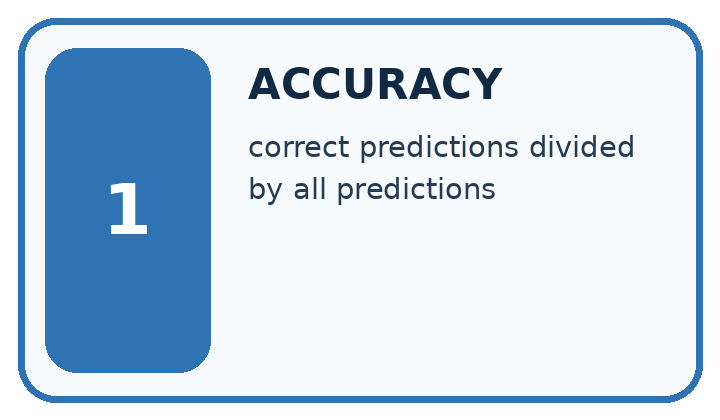
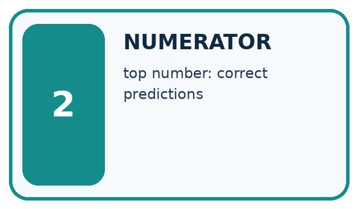
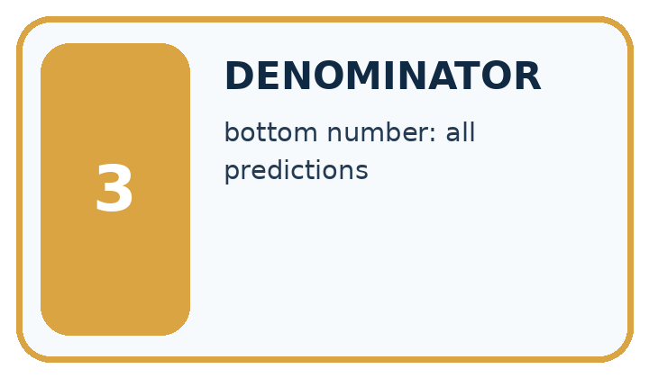
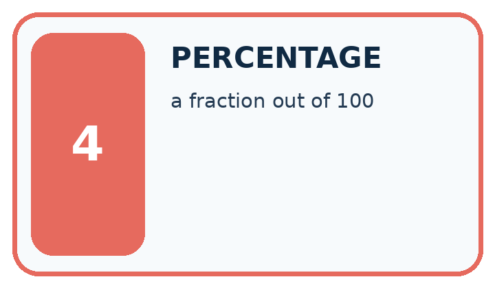
| Word | My own example | Not this / boundary |
|---|---|---|
| accuracy | The number of correct predictions divided by the total number of scored predictions. | |
| numerator | The top number of a fraction, identifying the counted portion. | |
| denominator | The bottom number of a fraction, identifying the number of equal parts or total cases considered. | |
| percentage | A proportion expressed per hundred; multiply a fraction by 100 to express it as a percent. |
Words used in the closer explanation
| Word | Meaning |
|---|---|
| Class imbalance | Unequal numbers of examples in different classes |
| Majority baseline | A rule that always predicts the most common training label |
| Class-specific correct fraction | Correct predictions for one reference class divided by the number of examples of that class |
| Balanced accuracy | The average of the class-specific correct fractions with equal weight for each class |
Terms for Summaries with counts and proportions
| Term | Meaning |
|---|---|
| Count | The number of matching records |
| Denominator | The total number used in a fraction |
| Proportion | A part divided by its relevant whole |
| Eligible | Included under a stated rule |
Student lesson · 6 of 16
Follow a worked example
WORKED EVIDENCE
Reason Step by Step
Predict first. Then check each step. A correct answer without visible reasoning is incomplete evidence.
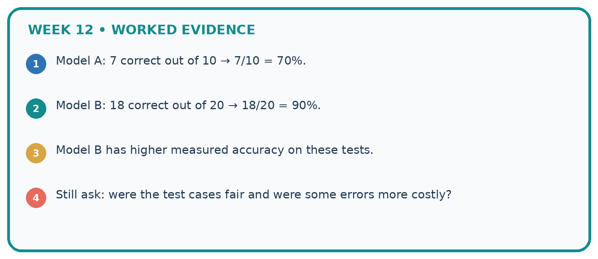
1. Model A: 7 correct out of 10 → 7/10 = 70%.
2. Model B: 18 correct out of 20 → 18/20 = 90%.
3. Model B has higher measured accuracy on these tests.
4. Still ask: were the test cases fair and were some errors more costly?
Recalculate, retrace, or restate the reasoning in your own representation:
CHECK Did the evidence answer the exact question? Did the total, path, or source record stay consistent?
A closer explanation
Same overall score different class results
Balanced accuracy is a metric choice, not a repair to the classifier or a guarantee of safety. It gives classes equal influence in this summary; it does not encode the actual consequences of false alarms and missed cases. Four blocked evaluation examples are also too few for a strong general claim.
Apply the connected idea: Summaries with counts and proportions
Learn from the worked case
Cover the result before checking it. Say what is given, choose the procedure, and follow one step at a time. Then uncover the result and explain your first mismatch. Ask why a step is allowed, not only what number it produces.
A pictorial worked case: Accuracy as a Fraction
A fictional shelf classifier predicts repair needed or not needed.
The facts we will use
Evaluation reference labels: 16 not-needed and 4 needed. Positive class is needed.
Always-not-needed baseline is correct on 16. Candidate has TP=3,FN=1,FP=2,TN=14.
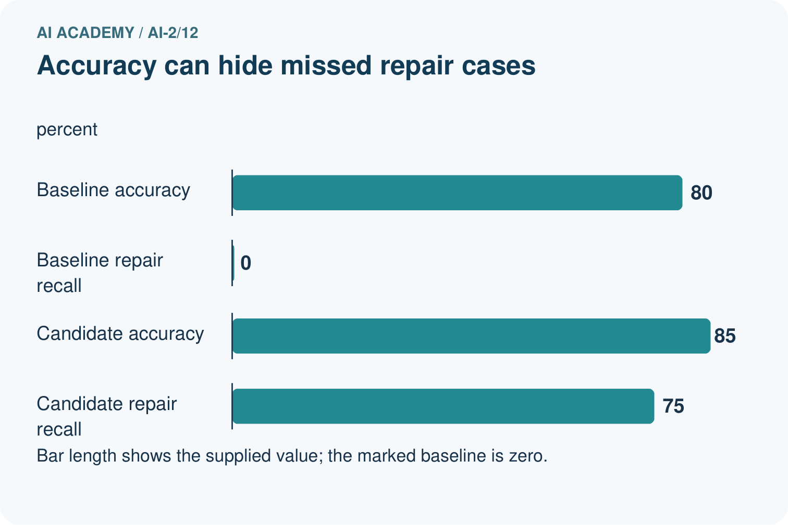
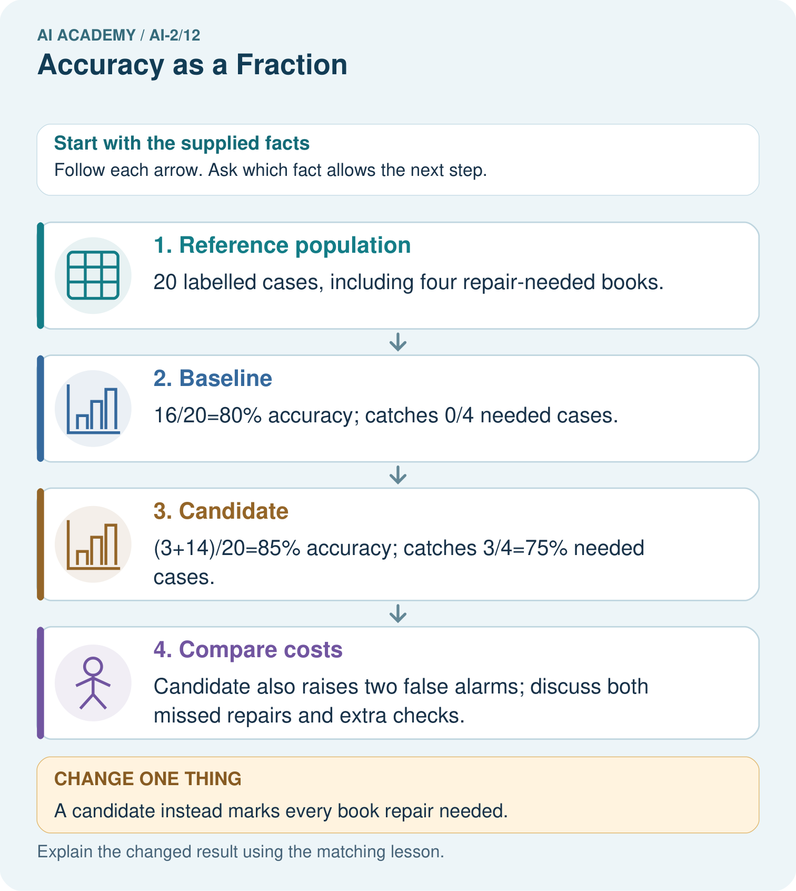
Read the picture one step at a time
Why this result follows
A majority-class baseline can look accurate while missing every positive case. The candidate improves overall agreement and repair detection in this table, but false alarms still matter. Use the same cases, denominators and positive-class definition for both. Do not infer that a single metric identifies the best policy for every library.
What this example does not establish
These selected cases do not establish future rates or specify the real cost of each error.
Read the labelled picture: Why is 100% repair detection not sufficient to declare the changed classifier best?
Change one thing: A candidate instead marks every book repair needed. Predict the result before checking the explanation. What remains the same?
Student lesson · 7 of 16
Find and repair a mistake
ERROR DETECTIVE
Compare → Diagnose → Repair
Do not patch the answer. Find the earliest unsupported assumption, wrong step, or weak evidence.
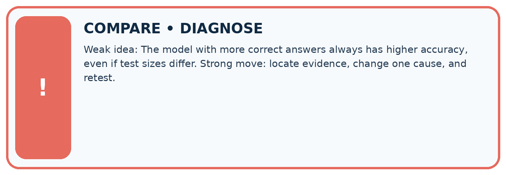
| Evidence record | Expected | Actual | Likely cause / next test |
|---|---|---|---|
| normal case | works | ||
| boundary case | stated rule | ||
| missing input | safe response | ||
| fresh transfer | generalizes |
Repair one cause. Why is this repair better than changing several things?
A closer explanation
Compare methods on the same appropriate evaluation examples and report the training-derived baseline. Include ordinary accuracy, each class denominator, false positives and false negatives. An equal-class summary adds information but cannot choose the acceptable tradeoff for the task. Keep development decisions separate from a final test.
A result of 4/4 correct blocked cases is 100 percent on those four examples, not proof of perfect future detection. If the evaluated set contains no blocked cases, it cannot measure blocked-case performance at all. Next week separates precision and recall by asking which denominator answers each question.
Apply the connected idea: Summaries with counts and proportions
A percentage from a few volunteers is not automatically representative of the whole class. Report counts, the question, who responded and exclusions alongside the percentage.
Student lesson · 8 of 16
Practise together
LOGIC STUDIO
Trace Before You Run
Block code, pseudocode, tables, and diagrams are different ways to expose the same reasoning.

SET evidence_record PREDICT expected_result RUN one normal case and one boundary case COMPARE actual_result with expected_result IF different: locate first cause; change one factor; RETEST EXPLAIN result, limitation, and next safe step
Trace one input. Which line changes the state or chooses a path?
A closer explanation
Consider a separate illustrative set with 8 clear and 8 blocked cases. Suppose the same within-class fractions hold: the baseline matrix is [[8,0],[8,0]] and the candidate matrix is [[6,2],[0,8]]. Ordinary accuracy is now 50 percent versus 87.5 percent. Balanced accuracy remains 50 percent versus 87.5 percent. The class mix changed the overall score even though the within-class fractions stayed fixed.
This is an arithmetic comparison, not proof that a real classifier keeps the same behavior after a population change. Report sample size, class counts, full matrix and how the evaluation data was chosen. Do not remove inconvenient cases or duplicate rare evaluation cases just to improve a headline number. If training is resampled, keep that separate from evaluation and document it.
Apply the connected idea: Summaries with counts and proportions
Dividing by known when it equals 0 causes ZeroDivisionError. Test known > 0 before division and report no known responses if none exist. Reporting 0 percent would wrongly suggest known responses with no Yes answers.
Practise with less help: Compare both class fractions
Use workbook W2 for the connected example “Accuracy and class imbalance”. First fill the input and rule boxes. Try the middle steps before asking for a hint. After a hint, try the next step yourself.
| Plan | Do | Check |
|---|---|---|
| What is given? Which rule or procedure applies? | Record each intermediate step. | Does the result follow? What remains unknown? |
Explain your trace to a partner. Your partner points to one step to check. Swap roles on the next case. Each person writes their own explanation.
Check your reasoning
Use the worked case for Accuracy and class imbalance. Proposed explanation: “High accuracy means both classes work well”. Decide whether this explanation is supported. Point to the step or supplied fact that decides; explain your repair if needed.
Answer on your own before discussion. If you are unsure, say which step you need help with.
Practise the connected topic: Summaries with counts and proportions
Use its named workbook W2. Identify the given inputs, try the middle steps with less help, then explain your trace. Check this claim before group discussion: A successful run proves the conclusion
Explain the picture
Why is 100% repair detection not sufficient to declare the changed classifier best?
This is supported practice. Keep the separately named independent case for an attempt before feedback.
Student lesson · 9 of 16
Run the investigation
EVIDENCE LAB
Predict → Test → Record → Explain
Keep expected and actual results separate. Surprises are useful data when recorded honestly.
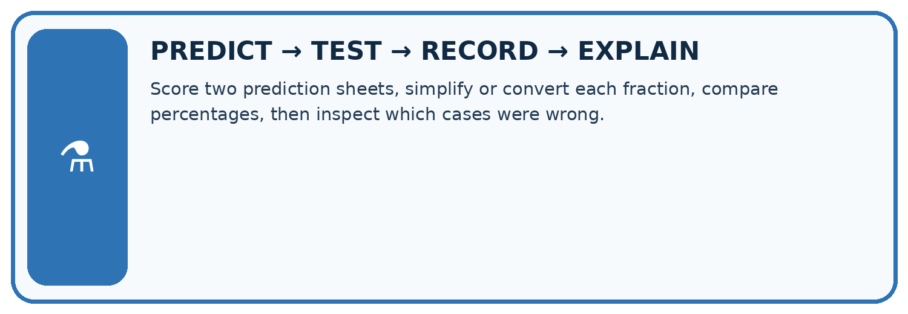
Score two prediction sheets, simplify or convert each fraction, compare percentages, then inspect which cases were wrong.
| Test / input | Prediction | Actual | Evidence / calculation | Change or keep? |
|---|---|---|---|---|
| normal | ||||
| boundary | ||||
| missing | ||||
| fresh transfer |
What did the hardest test teach you that the normal test did not?
Plan → try → check
Before trying: what do I expect, and why? While trying: which step could first go wrong? Afterwards: what did I actually observe, and what should change? Keep “not run” if you only traced the procedure.
Student lesson · 10 of 16
Build your understanding
MASTERY
From Knowing the Word to Owning the Idea
Move upward only when you can produce evidence without copying the worked example.

1 • NAME: Define the concept without repeating the textbook.
2 • TRACE: Show the information, state, branch, calculation, or evidence path.
3 • APPLY: Solve a different example independently.
4 • CHALLENGE: Find a boundary case, counterexample, or unfair outcome.
5 • EXPLAIN LIMITS: Say when the result should not be trusted or used alone.
My strongest evidence of independent understanding:
Student lesson · 11 of 16
Connect your project
CUMULATIVE PROJECT
Transparent Book Recommender
Every week adds one inspectable piece. The system must show how it reached a result.
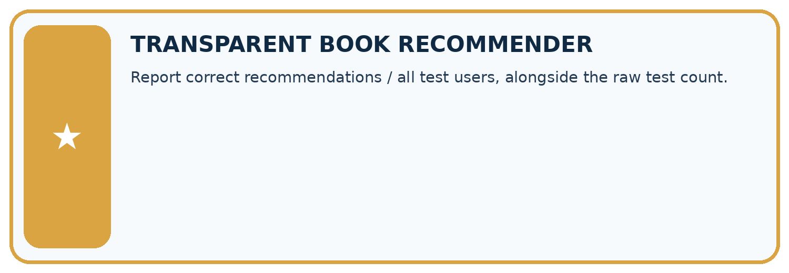
THIS WEEK’S CHECKPOINT Report correct recommendations / all test users, alongside the raw test count.
SYSTEM MAP Reader need → allowed inputs → transparent rule or score → ranked candidates → explanation → test record → human decision
What will you add, change, or verify in the project this week?
What should remain under human control?
RESPONSIBLE DESIGN Collect only necessary information. Show uncertainty and limits. Never confuse a ranking with a fact about a person.
Evidence for your project
Compare recommender choices with a simple baseline and report relevant rare-category failures, not only aggregate accuracy.
Student lesson · 12 of 16
Show what you know
INDEPENDENT MASTERY PROOF
Explain • Transfer • Test • Defend
Complete this page without copying the worked example. Your reasoning matters more than decoration.
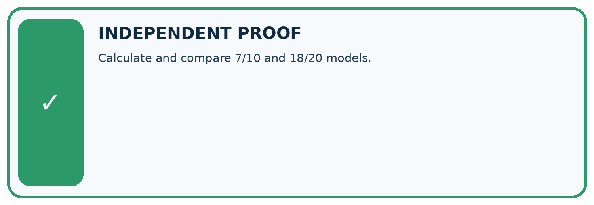
CHALLENGE Calculate and compare 7/10 and 18/20 models.
1. My fresh example, trace, calculation, or design:
2. My evidence that it works (include a boundary or missing-data case):
3. One limitation, fairness concern, or situation needing human review:
SELF-CHECK □ I explained the mechanism □ I used evidence □ I tested a fresh case □ I named a limitation □ I can answer ‘why?’
Student lesson · 13 of 16
Study a complete case
Week 12 Worked case
Use the supplied details to practise the weekly concept before attempting the independent question. This case extends the illustrated lesson.
The situation
Nine of twelve held-out classifications are correct.
The question
Compute accuracy and state the denominator.
Worked explanation
9/12=3/4=75%. Count all scored cases, including errors.
Explain it in your own words
Which detail supports the answer, and why does it matter?
Trace the supplied case visually
All scored cases belong in the denominator
| Evidence or stage | Value or result |
|---|---|
| Correct classifications | 9/12 |
Nine of twelve held-out classifications are correct.
Compute accuracy and state the denominator.
9/12=3/4=75%. Count all scored cases, including errors.
Student lesson · 14 of 16
Try a new case independently
Independent case: Assess a new comparison independently
New training labels have a clear majority. A separate evaluation has 18 clear and 2 blocked records. The always-clear baseline is [[18,0],[2,0]] and candidate is [[15,3],[1,1]], with reference rows and clear then blocked on both axes. Calculate ordinary accuracy, both class fractions and balanced accuracy for each. Give candidate FP and FN, then explain why the metrics do not choose an automatic winner.
Attempt this case before feedback. Record any help. Earlier examples below are further practice; a case already practised with feedback cannot establish fresh transfer.
Week 12 Independent application
Close the worked explanation. Apply the idea to this different question without copying.
A classifier gets 9 of 12 cases right. Another gets 8 of 10 right. Calculate both accuracies and identify the larger fraction.
My answer, with a trace, calculation or supporting evidence
Create and test
Change one relevant detail. Predict the result before testing. Include a boundary or missing-information case when it helps reveal a limit.
My changed input and expected result
Connect to your project
Report correct recommendations / all test users, alongside the raw test count.
The evidence I will keep
Your teacher has the independent answer and scoring criteria. Complete the matching workbook week to keep your practice evidence together.
Transfer practice from the original programme
Class A gets 8/10 cases right and class B gets 18/30 right. Compute each rate and the combined rate. Why is averaging the two percentages misleading here?
Use feedback to improve
Attempt the independent case before hints. Record whether you worked alone, used a hint or followed a model. After feedback, fix the first unsupported step and explain why it changed. A later check uses a changed case, not a copied answer.
Student lesson · 15 of 16
Your lesson route
Start with this question: A fictional shelf classifier predicts repair needed or not needed.
| By the end, I can | How I will show it |
|---|---|
| Explain why overall accuracy can hide failure on a less common class | Explain the deciding step, show a trace or test, and state one limit. |
| Compare a training-majority baseline with class-specific results | Explain the deciding step, show a trace or test, and state one limit. |
| Calculate an equal-class average and report its limits alongside the confusion matrix | Explain the deciding step, show a trace or test, and state one limit. |
Remember → watch and explain → try with help → investigate → try independently → keep project evidence. Your teacher may spread this lesson across several classes.
Keep your first prediction. Compare it with what the evidence shows and explain any change.
Student lesson · 16 of 16
Finish and return
Close your notes. Explain this goal in your own words: Explain why overall accuracy can hide failure on a less common class
If you are unsure, return to the worked picture and explain one arrow. If you are ready, change an input or assumption and justify your prediction.
Save your workbook evidence. At the next review, try a different case before opening your old answer.